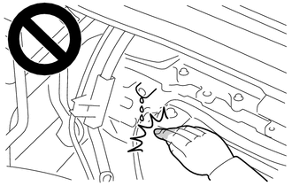
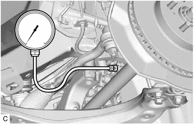

LUBRICATION SYSTEM ON-VEHICLE INSPECTION
PROCEDURE
-
CHECK ENGINE OIL LEVEL
-
Put the engine in inspection mode (maintenance mode).
-
Warm up and stop the engine, then wait for 5 minutes.
-
Check that the engine oil level is between the low level and full level marks on the engine oil level dipstick.
If the level is low, check for engine oil leaks and add engine oil to the full level mark.
Note
Do not fill to above the full level mark.
Tech Tips
A certain amount of engine oil will be consumed while driving. In the following situations, engine oil consumption may increase, and engine oil may need to be refilled in between oil maintenance intervals.
-
When the engine is new, for example directly after purchasing the vehicle or after replacing the engine.
-
If low quality engine oil or oil of an inappropriate viscosity is used.
-
When driving at high engine speeds or with a heavy load (when towing, etc.), or when accelerating or decelerating frequently while driving.
-
When idling for a long time, or when driving frequently through heavy traffic.
When judging the amount of oil consumption, keep in mind that the oil may have become diluted, making it difficult to judge the true level accurately.
-
-
-
CHECK ENGINE OIL QUALITY
-
Check the engine oil for deterioration, water intrusion, discoloration or thinning.
If the quality is visibly poor, replace the engine oil and oil filter element.
-
-
CHECK OIL PRESSURE
CAUTION:
-

To prevent injury due to contact with an operating cooling fan, keep your hands and clothing away from the cooling fans when working in the engine compartment with the engine running or the power switch on (IG).
-

To prevent burns, do not touch the engine, exhaust manifold or other high temperature components while the engine is hot.
-

To prevent burns, do not remove the engine oil pressure switch assembly while the engine is hot.
-
Remove the engine oil pressure switch assembly.
-

Install an oil pressure gauge with adapter.
-
Put the engine in inspection mode (maintenance mode).
-
Warm up the engine.
Tech Tips
After warming up the engine, the engine coolant temperature is between 75 and 100°C (167 to 212°F).
-
Check the oil pressure.
Standard Oil Pressure Engine Condition Oil Pressure Idling 60 kPa (0.6 kgf/cm2, 8.7 psi) or higher
2500 rpm 142 kPa (1.4 kgf/cm2, 21 psi) or higher
If the result is not as specified, check the quality of the engine oil and check the oil paths for clogging. Repair or replace if necessary. If the engine oil pressure is still not as specified, check the oil pump assembly.
-
Remove the oil pressure gauge with adapter.
-
Install the engine oil pressure switch assembly.
-
Inspect for engine oil leaks.
-